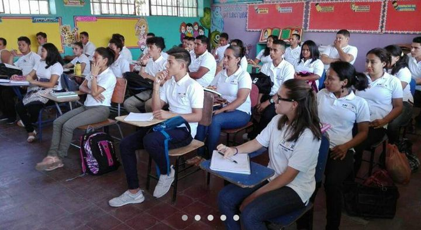
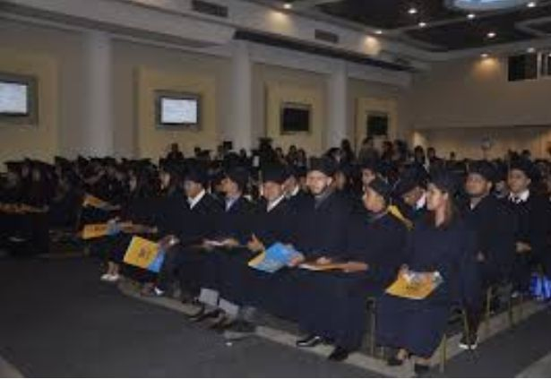

Instituto Hondureño de Educacion por Radio
ADMINISTRACION DE EMPRESAS
Perfil del Egresado Campo de Aplicacion Conocimiento Defincion Profesional Habilidades Actitud y ComportamientoEl perfil del egresado de la carrera de bachillerato tecnico profesional en administracion y servicios con orientacion en administracion de empresas,podra desempeñarse en diversos campos relacionados con la administracion,como ser:
- Recursos humanos
- Mercadotecnia
- gestion de la calidad
- Tecnología administrativa
- entre otros.
Estara capacitado para desempeñarse durante los procesos administrativos,operativos y de apoyo a las labores directivas y ejecutivas de las empresas:
- Tambien podra dedicarse a la gerencia de empresas ajenas o de su propiedad. 
- 1.Manejar y aplicar tecnicas de administracion que garantizen procesos de trabajo eficientes
- 2.Manejar normas atributarias,leyes laborales y sociales y aplicar los procedimientos adecuados para su cumplimiento tanto en el ambito del estado como las empresas y servicio desestralizados o privados.
- 3.Manejar conocimientos basicos de contabilidad y matematicas financieras que faciliten el analisis administrativo de los distintos procesos de gestion.
- 4.Aplicar las tecnicas específicas para la realizacion de los diversos procesos de comercializacio de bienes y servicios, tanto a nivel nacional como internacional.
- 1.Estructurar y desarrollar sistemas administrativos en un ambiente de vocacion de servicios y de negociacion con recursos humanos, dispuestos a trabajar orientado a resultados estrategicos,que le permita desempeñarse sin errores en las diferentes areas administrativas de una organizacion
- 2.Establecer normas para una gestion financiera transparente como base para la toma de decisiones en forma adecuada.
- 3.Crear y desarrollar productos innovadores y de alta calidad orientados a la Satisfaccion de las necesidades y expectativas del cliente como consumidor final.
- 4.Brindar una atencion de servicios al cliente,que refleje una actitud positiva y responsable, ofreciendo y comercializando productos y servicios de excelencia que demande un mercado cada vez mas competitivo.
- 1.Usar apropiadamente equipos y herramientas de oficina.
- 2.Poseer capacidad numericas en el calculo rapido y preciso en el calculo de impuestos y prestaciones laborales.
- 3.Usar herramientas informaticas para la preparacion de estados financieros.
- 4.Manejar la calculadora financiera para operaciones matematicas.
- 5.Utilizar sumadoras,cajas registradoras,y equipo de tarjeta de credito y otro equipo utilizado en comercializacion de bienes y servicios.
- 6.Utilizar equipo audiovisual apropiado para conferencias ejecutivas.
- 7.Desarrollar destrezas en cuanto a una lectura y escritura para 86la preparacion de informes.
- 8.Poseer capacidad numerica y de observacion para realizar arqueo de caja.
- 9.Diseñar y aplicar pruebas y entrevistas de trabajo. 
- 1.Detectar,analizar y dar solucion a problemas con confianza y seguridad.
- 2.Aprovechar las experiencias diarias y mantenerse actualizado en los desarrollos de su campo de especialización.
- 3.Enfrentar con exito la incertidumbre en un entorno en constante cambio.
- 4.escuchar con atencion a jefes y subalternos.
- 5.Comunicar ideas con eficacia a subalternos y jefes,en forma verbal y escrita.
- 6.Interactuar efectivamente con una diversidad de individuos y de grupos de trabajo.
- 7.Promover la creatividad y la innovacion.
- 8.Manejar adecuadamente el cambio.
- 9.Manejar personal y resolver conflictos con eficacia.
- 10.Tomar decisiones oportunas,evaluando la informacion a su enlace.
- 11.Organizar recursos para su uso obtimo.
- 12.Ejercer funciones de liderazgo para la consecuencia de fines empresariales.
- 13.Trabajar eficazmente en equipo.
- 14.Manejar adecuadamente el estres.
CAMPO DE APLICACIONES
El bachiller tecnico profesional en administracion de empresas es un profesional que se encarga de organizar de recursos materiales y humanos las habilidades y conocimientos que se desarrollen le permitiran detectar prevenir y corregir errores en la planificacion del trabajo de las personas.

CONOCIMIENTOS
DEFINICION PROFESIONAL
Al momento de ingresar al campo laboral,el bachiller tecnico profesional en administracion y servicios con orientacion a administracion de empresas,sera capaz de:
HABILIDADES
ACTITUDES Y COMPORTAMIENTOS
Bachillerato Técnico Profesional en Administración de Empresas
Estructura de estudio por Ciclos
| Primer Ciclo | Segundo Ciclo | Tercer Ciclo |
| Formacion de fundamento | Formación Orientada | Formación Específica Práctica Profesional Trabajo Educativo Social |
| 2 Semestre | 1 Semestre | 3 Semestre |
Formación Específica
| Áreas Curriculares | Espacios Curriculares |
| CONTABILIDAD | Contabilidad I Contabilidad II Contabilidad de costos Contabilidad bancaria |
| FINANZAS | Matemáticas Financieras Administración Financiera I Administración financiera II |
| GESTIÓN Y SERVICIO AL CLIENTE |
Operaciones Tributarias Atención al cliente |
| LEGISLACIÓN | Legislación Mercantil |
| AUDITORIA | Auditoria |
| INFORMÁTICA | Informática contable |
| ECONOMIA | Economía |
| ADMINISTRACIÓN | Administracio General |
| Practica Profesional |
Distribución de la carga
y espacios curriculares
Primer Año
| I SEMESTRE | II SEMESTRE |
| Espacio Curricular | Espacio Curricular |
| Matemática I | Matemáticas II |
| Español I | Español II |
| Física I | Física II |
| Química I | Química II |
| Biología I | Biología II |
| Inglés I | Inglés II |
| Sociología | Historia de Honduras |
| Filosofía | Orientación Vocacional |
| Informática | Lenguaje Artístico |
| Psicologia | Educación Física y Deporte |
Segundo Año
| I SEMESTRE | II SEMESTRE |
| Espacio Curricular | Espacio Curricular |
| Matemática III Aplicada | Mercadotecnia |
| Lengua y Literatura | Organización del Trabajo |
| Inglés Técnico III | Proyectos y Presupuesto |
| Formación Específica: | Formación Específica |
| Contabilidad I | Matemática Financiera |
| Administración General | Contabilidad |
Tercer Año
| I SEMESTRE | II SEMESTRE |
| Formación Específica | Formación Específica |
| Formación Específica | Formación Específica |
| Economía | Administración Financiera II |
| Legislación Mercantil | Contabilidad de Costos |
| Operaciones Tributarias | Auditoría |
| Contabilidad Bancaria | Servicio al Cliente |
| Administración Financiera I | |
| Informática Contable | Practica Profesional |
| Trabajo Educativo Social |
(c) Derechos reservados Diseñado por Grupo 9 proyecto diseño web, 12v informática sección 2, -2021